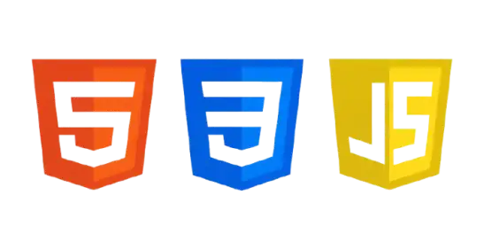
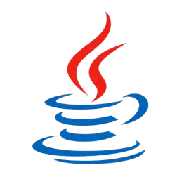
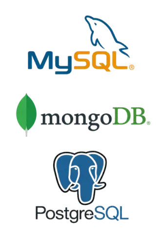
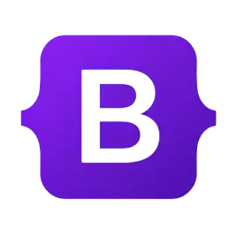
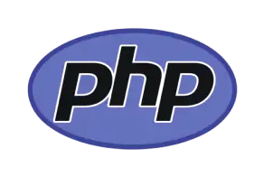

HTML, CSS e JavaScript
HTML: Estrutura das páginas.
CSS: Cores, estilos e aparência.
JavaScript: Interatividade e funcionalidade
As tecnologias de programação são as ferramentas e linguagens que permitem criar sites, aplicativos, sistemas, jogos e muito mais.

HTML: Estrutura das páginas.
CSS: Cores, estilos e aparência.
JavaScript: Interatividade e funcionalidade
Usada em automação, inteligência artificial, análise de dados e dsenvolvimento de sistema.

Utilizada no desenvolvimento aplicações, sistemas empresariais e aplicativos Android.

C é uma linguagem usada para criar softwares e sistemas com alto desempenho.

MySQL: Armazena e organiza informações.
MongoDB: Banco de dados orientado a documentos.
PostgreSQL: Gerencia dados de sistemas.

Bootstrap: Facilita a criação de páginas responsivas.

PHP é uma linguagem de programação utilizada principalmente no desenvolvimento de sites e sistemas web dinâmicos.